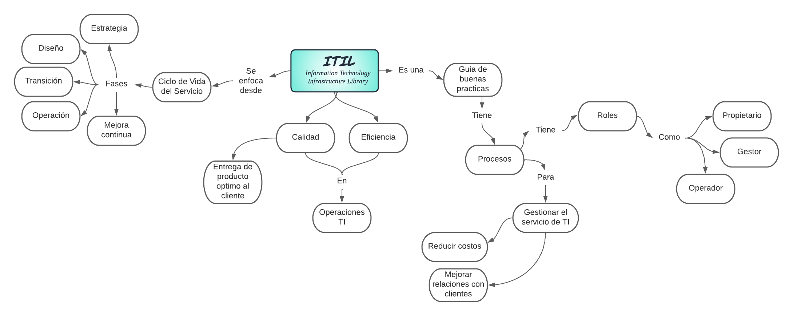
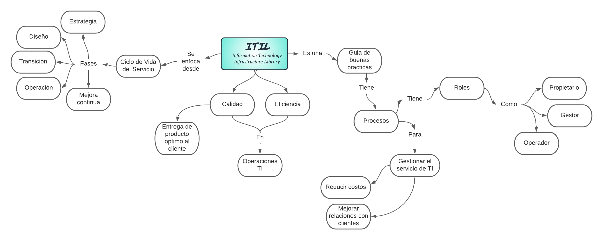

Awopedia 🤯
Awopedia 🤯


¿Qué es ITIL?
Las siglas ITIL significan Information Technology Infrastructure Library, que traduciríamos literalmente como Biblioteca de Infraestructura de Tecnologías de Información. ITIL es una guía de buenas prácticas para la gestión de servicios de tecnologías de la información (TI). La guía ITIL ha sido elaborada para abarcar toda la infraestructura, desarrollo y operaciones de TI y gestionarla hacia la mejora de la calidad del servicio.
Los pilares de ITIL son los siguientes principios:
» Procesos, necesarios para la gestión de TI de acuerdo a la alineación de los mismos dentro de la organización
» Calidad, entendida como la entrega a cliente del producto o servicio óptimos, es decir, incluyendo las características acordadas.
» Cliente, su satisfacción es el objetivo de la mejora de los servicios, siendo, por lo tanto el beneficiario directo de la implantación de las buenas prácticas de ITIL.
» Independencia, siempre deben mantenerse buenas prácticas a pesar de los métodos establecidos para cada proceso y de los proveedores existentes.
 
